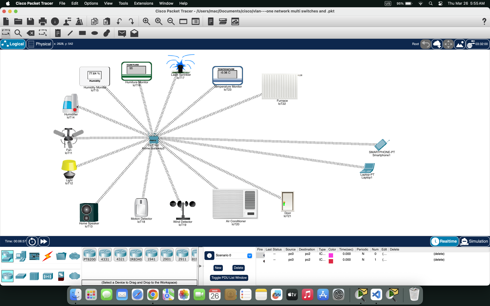

Wireless IoT Devices · Home Gateway Configuration · IoT Registration & Control

Home Gateway · Light · Fan · AC · Speaker · Motion Sensor
Imagine you are sitting in your living room with your laptop. You don't need to know anything about IP addresses, wireless configuration, or server settings. The moment you open your laptop, it automatically connects to the SmartHome-Network WiFi. To control your smart devices, you open the IoT Monitor application on your desktop. You log in with admin/admin, and instantly you see all your registered devices: Light, Fan, AC, Speaker, and Motion Sensor.
To turn on the living room light, you simply click the ON button next to "Light" — the light turns on instantly. To turn on the AC, you click its ON button. Everything is just one click away. Behind the scenes, the Home Gateway (192.168.25.1) receives your command and sends it wirelessly to the specific device. You don't need to know which IP address each device has — the Home Gateway handles all the addressing automatically.
If you want to check if motion is detected, you look at the Motion Sensor reading on the dashboard — it shows "Active" or "Inactive". The system can even be configured with automatic rules: when motion is detected, the light turns on automatically; when the temperature rises, the AC activates. From your perspective, the house just "knows" what to do — all the magic happens at the application layer, with protocols like DHCP assigning IPs and the IoT server managing device communication.
✨ Key takeaway: Users only need to click buttons in the IoT Monitor. The Home Gateway manages all wireless communication, device registration, and command delivery. This lab perfectly mirrors how real-world smart home systems like Amazon Alexa or Google Home work.
Open Cisco Packet Tracer
Add devices to workspace:
Position devices as shown in Figure 5.1 above
Click Home Gateway → Config tab → Wireless
SmartHome-Network192.168.25.1For EACH IoT device (Light, Fan, AC, Speaker, Motion):
SmartHome-NetworkFor EACH IoT device:
192.168.25.1 (Home Gateway IP)Connect Laptop to WiFi:
SmartHome-Network from dropdownVerify Laptop IP:
ipconfig → IP should be 192.168.25.100ping 192.168.25.1 → Should get repliesOpen IoT Monitor:
192.168.25.1adminadminControl Light:
Test all devices:
Monitor Motion Sensor:
In IoT Monitor, navigate to Rules/Conditions tab
Rule 1 - Motion-Activated Light:
Rule 2 - Welcome Home:
Rule 3 - Energy Saver:
To create a rule:
In IoT Monitor, navigate to Scenes tab → Create New Scene
Movie Night Scene:
Party Mode Scene:
Sleep Mode Scene:
To create a scene:
Test Manual Control: Click each device ON/OFF → Verify devices respond
Test Motion Rule: Click Motion Sensor → Config → Set to "Active" → Light should turn ON
Test Scene: Click Movie Night scene → All devices change to scene settings
| Service/Feature | User Action | Expected Outcome | Status |
|---|---|---|---|
| Wireless Connectivity | Power on devices | All devices get IP from Home Gateway (192.168.25.x) | ✓ Success |
| IoT Registration | Set Server Address to 192.168.25.1 | All devices show "Registered" in Config tab | ✓ Success |
| IoT Monitor Access | Login with admin/admin | Dashboard shows all 5 registered devices | ✓ Success |
| Manual Device Control | Click ON/OFF buttons | Devices respond in workspace | ✓ Success |
| Motion-Activated Light | Trigger Motion Sensor | Light turns ON automatically | ✓ Success |
| Movie Night Scene | Click Scene button | Light OFF, AC ON, Fan OFF, Speaker ON | ✓ Success |
| Sensor Readings | View dashboard | Motion status displayed | ✓ Success |